The karstic landscape of the southern Chinese city of Guilin will make you feel like you’re in another world, one created from the illustrations of a Dr. Seuss story, perhaps. And through those karsts run two rivers: the Li and the Yulong. Both rivers offer bamboo cruises, so you can see the place that inspired the picture on the RMB 20 bill. Don’t be surprised if you also see a pet water buffalo on the way, or perhaps a few cormorant fishers who want to snap a photo with you for money.
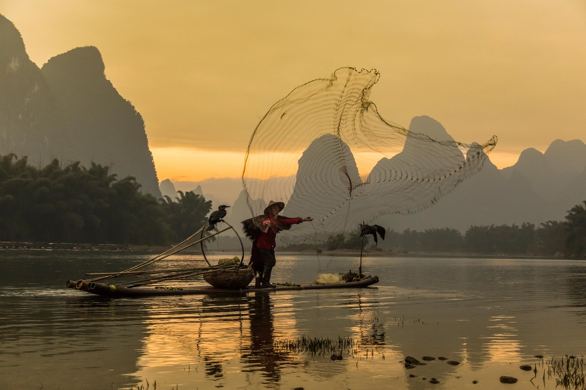 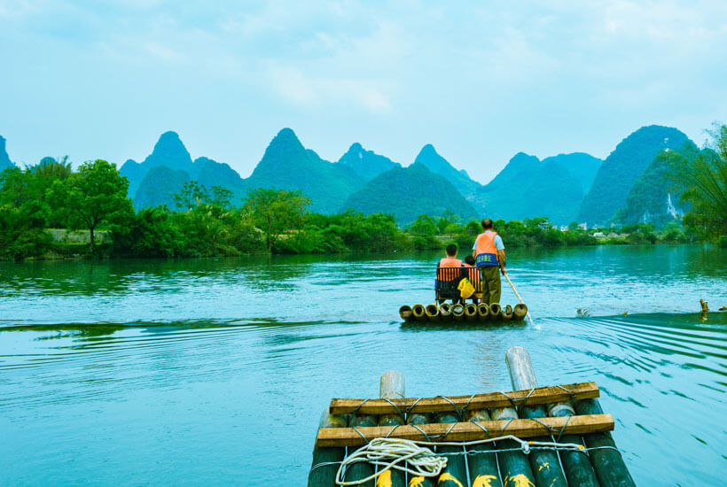Huangshan, meaning Yellow Mountain, is one of China’s most popular tourist destinations for a reason. If you have ever seen a traditional Chinese ink painting, you will recognize the signature look of Huangshan’s granite cliffs and the iconic way that the clouds hover above the peaks on a rainy day. It is these idyllic scenes that have inspired countless paintings and poems and made Huangshan Scenic Area a UNESCO World Heritage Site. The mountain requires at least a few days of your time and is best viewed during sunrise and winter snows.
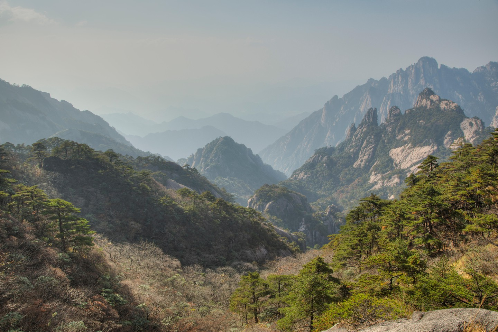 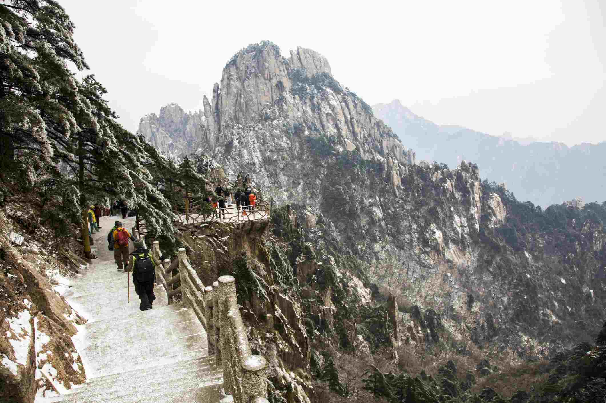No trip to China is complete without seeing the pandas at the Chengdu Research Base of Giant Panda Breeding. The research base, which is like an animal sanctuary dedicated to only one animal, is easily the biggest contributing factor to giant pandas no longer being an endangered species. In addition to its research and preservation efforts, the center also offers up-close looks at giant pandas, and red pandas as well.
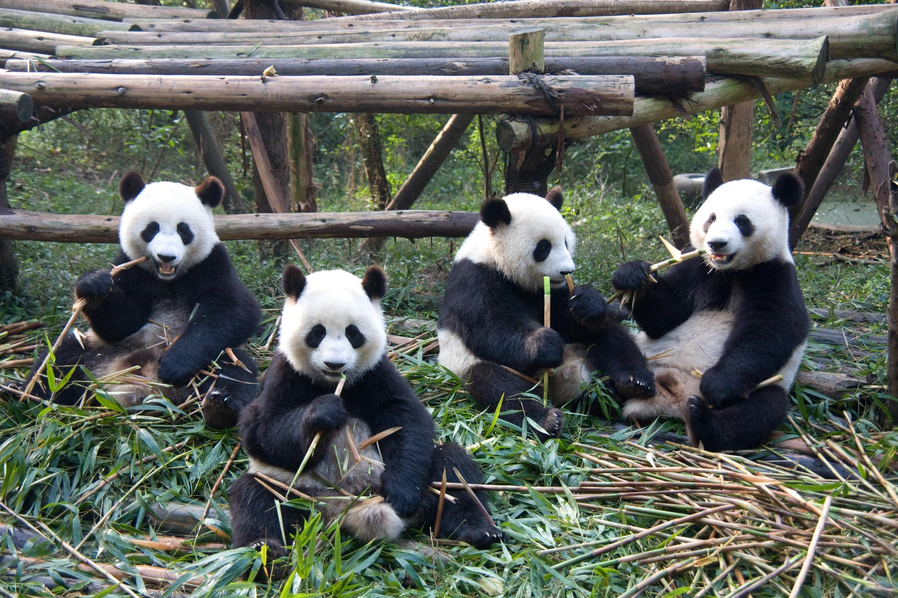The Great Wall is China at its most iconic. Most people choose to see the famous site in Beijing, but there are renovated sections of the wall all throughout northern China. For a strenuous hike with one thousand of your closest friends, opt for Beijing’s Mutianyu section. See where the Great Wall meets the sea in Henan province, or get a unique view of the Gobi Desert from the western end of the wall in Gansu province.
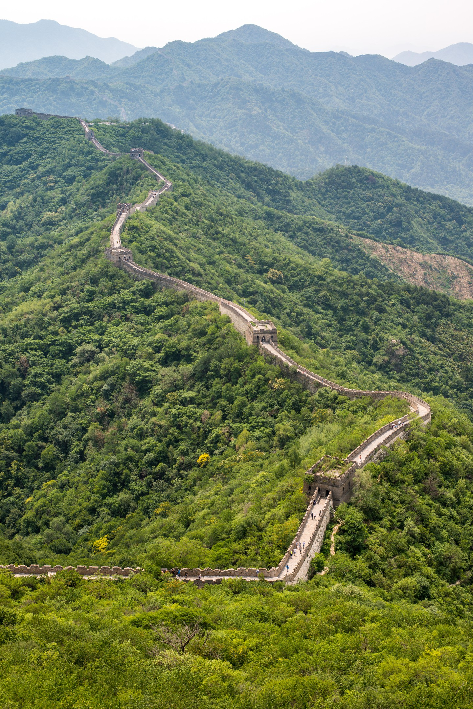Nearly everyone who knows Chinese cuisine has tasted the mighty Xiao Long Bao. Beloved the world over for their fragrant soup filling and delicate wrapping, Shanghai’s famous soup dumplings just aren’t the same anywhere else. It might take a few tries to get the hang of eating them properly, so you might as well eat them every chance you get. Here’s a list of the best places in Shanghai to do so.
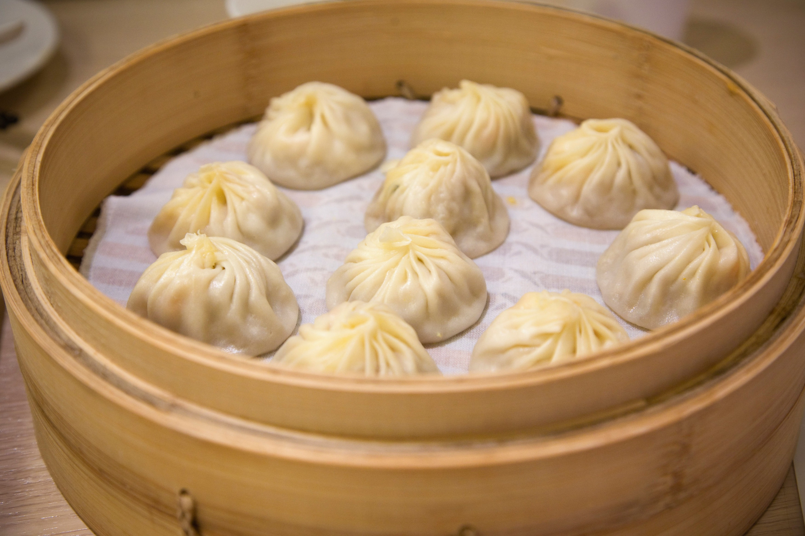 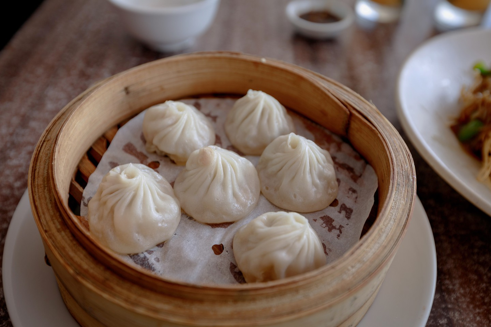It’s no surprise that Hangzhou’s famous West Lake has long been the subject of poems and songs. It is absolutely breathtaking, especially during sunrise and sunset when the sun floats just above the surrounding hills, painting the sky orange. Rent a boat and try to capture the beauty with a camera, or grab a bicycle and follow the perimeter of the lake, crossing traditional bridges and pavilions along the way.
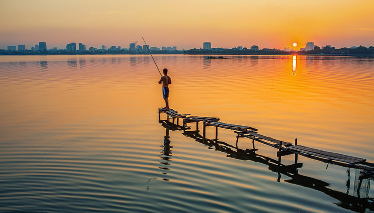 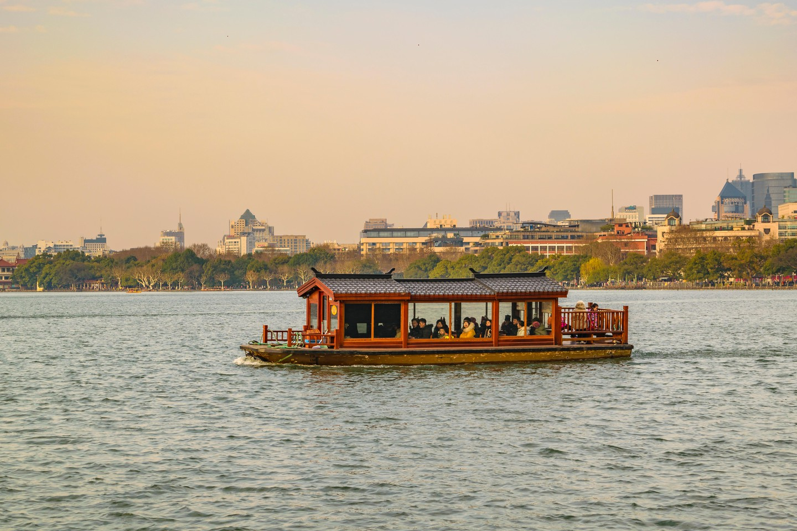Did you know that Tsingtao beer is as much German as it is Chinese? That’s because the coastal city of Qingdao was occupied by Germans for 16 years during the early twentieth century. In typical German fashion, the colonial residents established a brewery to provide a taste of life back home. Today that brewery produces the second most popular beer in the world. You can tour the factory, or simply kick back on the beach with a cold Tsingtao in hand.
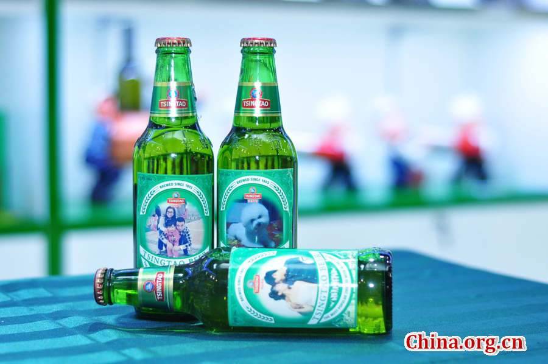 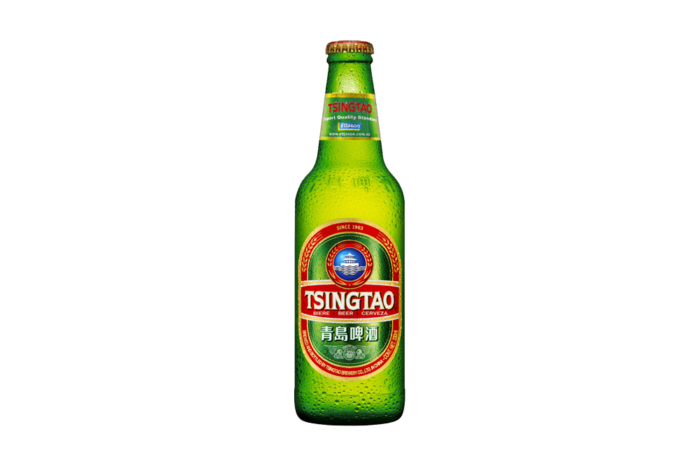Don’t just go to Xi’an for the Terracotta Warriors. In the end, you’ll find that one of the best experiences you can have in the western Chinese city is a simple bike ride atop the old city walls. The walls themselves are quite impressive, but don’t forget to look down for a bird’s eye view of everyday city life.
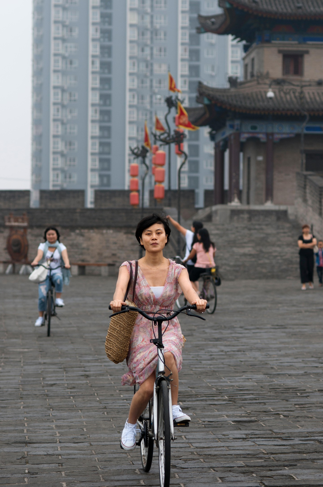 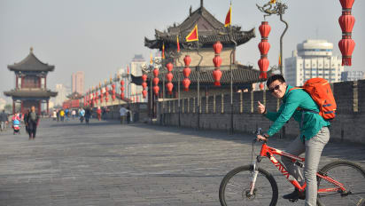Most people don’t even know that Inner Mongolia is part of China; fewer still have been there. Those who do go tend to stick to the capital of Hohhot and the world-famous Gobi Desert. For a taste of nomadic life, a trip to the grasslands is essential. Little of the grasslands is paved with roads, so you’ll have to explore the wide open beauty by horse. Experience the antithesis of city life during the day, and stay in a glammed-up Mongolian ger (yurt) during the night.
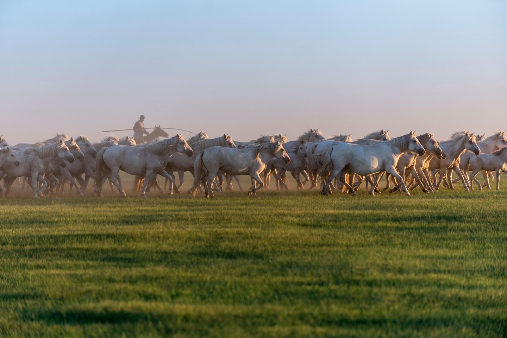 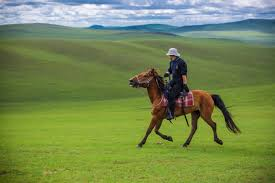Classified among the most beautiful beaches in Europe, the beach of Benagil Cave is a hidden beach which you will only be able to access by boat.
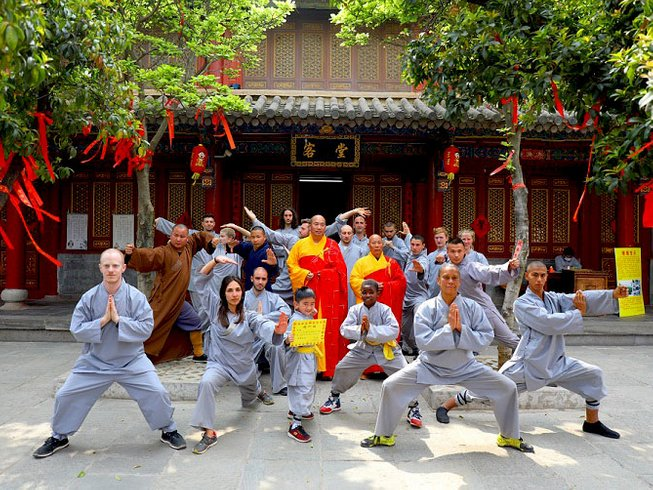 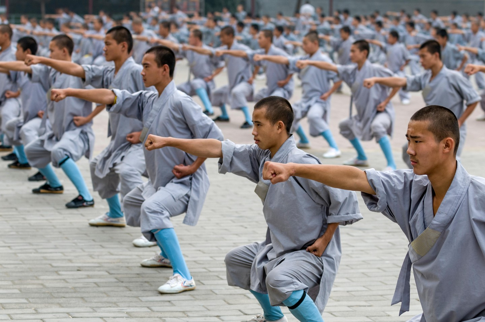


© Sernel Miranda Asunto (2019)